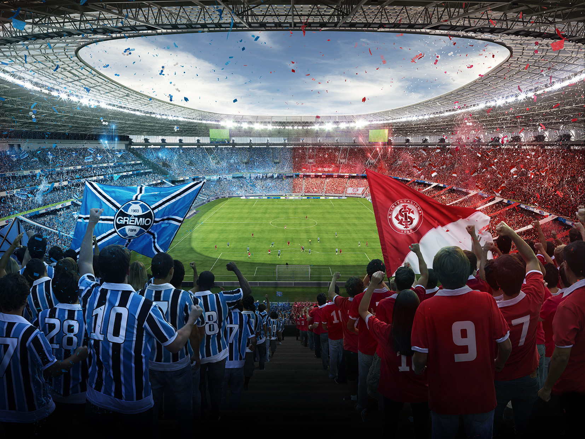

| |
|||
| Esporte Clube Avenida | Gauchão uma simples competição estadual de futebol, porém é umas da mais competitiva do brasil. |  | Porém, a competição aqui no rio grande do sul é levada muito a sério, Os times do interior não são pra brincadeira e as vezes se destacam mais que os times grandes. |
| Brasil de Pelotas | |||
| Caxias-RS | |||
| Grêmio | |||
| Internacional | |||
| Juventude | |||
| Novo Hamburgo | Alguns times acabam se destacando mais por seus benificios e por serem grande. Exemplo: Grêmio e Internacional. | ||
| São Luiz | |||
| São José | |||
| São Paulo-RS | |||
| Cruzeiro-RS | |||
| Veranópolis | |||
| Estamos sempre online no whatsapp > 51 943873454 | |||
| |
Governo do Estado do Rio Grande do Sul, Estas informações podem ou não conter direitos autorais. |